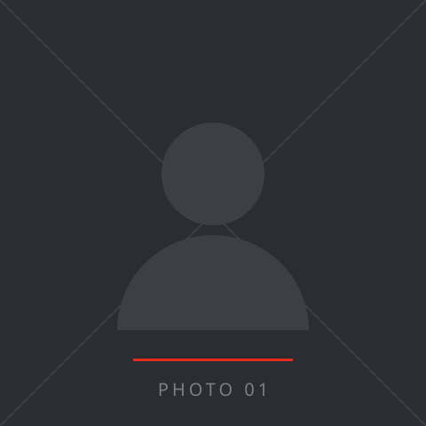
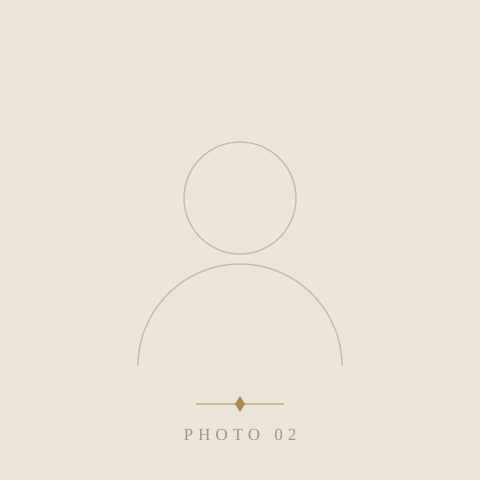
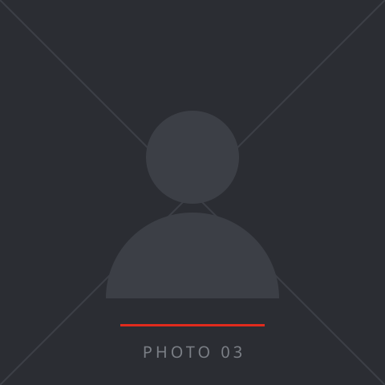

お名前整体院オーナー
「コメントプレースホルダー：受けた理由 → 変化の一言」
独立トレーナー・施術家のための経営コンサルティング
現場で結果を出せる人ほど、
「自分でやった方が早い」から抜け出せない。
個人で結果を出しているトレーナー・施術家へ。
とくに——プロスポーツを経験し、その技術で独立した、あなたへ。
登録は無料。しつこい営業はしません。
02 WHO
パーソナルジムを3店舗、10年以上経営。
元プロ野球（阪神タイガース）・MLB傘下のトレーナー。
でも、経営者になる過程では、
中身のないコンサルに大金を払い、
信頼していたスタッフに辞められ、
何度も自分の責任に気づかされてきました。
偉いコンサルではなく、
少し先を歩く先輩として。
03 PROBLEM
良い仕事のためなら、片道1時間の移動も惜しまない。
それは誠実さです。
でも、その積み重ねで——
技術には自信がある。
でも、経営者としての一線を、
まだ越えられていない。
04 FOR YOU
一つでも当てはまるなら、続きを。
05 BEFORE / AFTER
BEFORE自分の腕で売っている
AFTER会社全体で価値を売っている
BEFORE自分がいないと回らない
AFTER自分がいなくても回る
BEFORE数字は感覚
AFTER数字はKPIで管理
BEFORE見て学ばせる
AFTERマニュアルで人が育つ
BEFORE人にお客様がつく
AFTERブランドにお客様がつく
06 VOICE

お名前整体院オーナー
「コメントプレースホルダー：受けた理由 → 変化の一言」

お名前肩書き
「コメントプレースホルダー」

お名前肩書き
「コメントプレースホルダー」
07 LINE
知らないままでいる方が、
コストです。
08 SERVICE
課題は3つ。どれか一つからで構いません。
期間は決めません。効いているものから潰します。
①
採用・育成
②
集客とCPA
③
退会防止とLTV
必要になったら、理念設計・KPI・育成マニュアルへ拡張。
09 TIME
お金は取り返せます。
時間は戻りません。
自己流を続ければ、同じ壁に、また時間を使います。
半年で身につけた型は、この先ずっと使えます。
「時間ができたら」「お金が貯まったら」——
そう思っている間に、両方減っています。
11 PROFILE
長い間、それを人のせいにしていました。
本当は、経営者としての自分の責任でした。
同じ道を、少し先に歩いているだけです。
うまくいったことも、いかなかったことも話します。